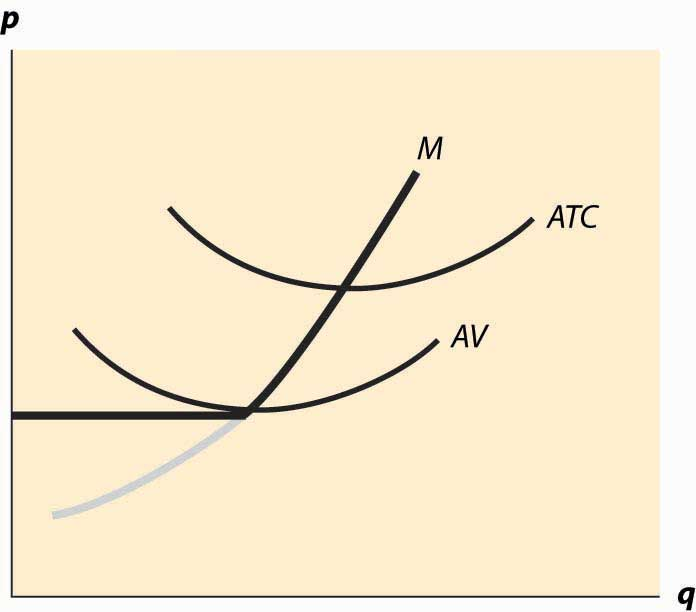
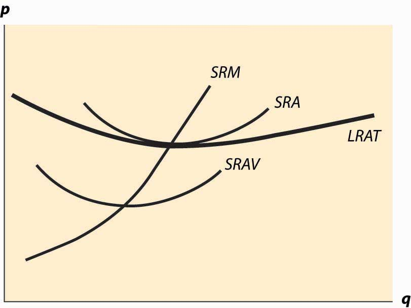
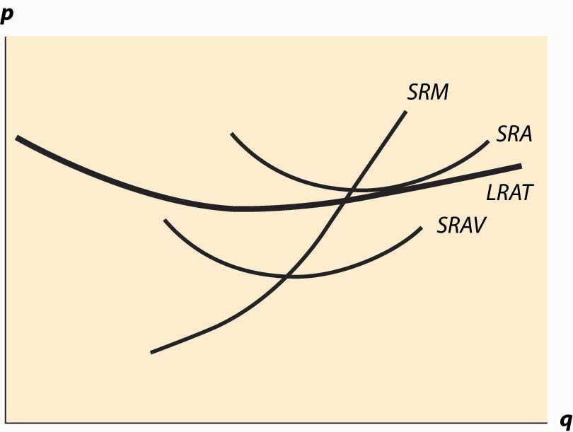

In this section, we consider a competitive firm (or entrepreneur) that can’t affect the price of output or the prices of inputs. How does such a competitive firm respond to price changes? When the price of the output is p, the firm earns profits where c(q|K) is the total cost of producing, given that the firm currently has capital K. Assuming that the firm produces at all, it maximizes profits by choosing the quantity qs satisfying which is the quantity where price equals marginal cost. However, this is a good strategy only if producing a positive quantity is desirable, so that which maybe rewritten as The right-hand side of this inequality is the average variable cost of production, and thus the inequality implies that a firm will produce, provided price exceeds the average variable cost. Thus, the profit-maximizing firm produces the quantity qs, where price equals marginal cost, provided price is as large as minimum average variable cost. If price falls below minimum average variable cost, the firm shuts down.
The behavior of the competitive firm is illustrated in Figure 10.1 "Short-run supply". The thick line represents the choice of the firm as a function of the price, which is on the vertical axis. Thus, if the price is below the minimum average variable cost (AVC), the firm shuts down. When price is above the minimum average variable cost, the marginal cost gives the quantity supplied by the firm. Thus, the choice of the firm is composed of two distinct segments: the marginal cost, where the firm produces the output such that price equals marginal cost; and shutdown, where the firm makes a higher profit, or loses less money, by producing zero.
Figure 10.1 "Short-run supply" also illustrates the average total cost, which doesn’t affect the short-term behavior of the firm but does affect the long-term behavior because, when price is below average total cost, the firm is not making a profit. Instead, it would prefer to exit over the long term. That is, when the price is between the minimum average variable cost and the minimum average total cost, it is better to produce than to shut down; but the return on capital was below the cost of capital. With a price in this intermediate area, a firm would produce but would not replace the capital, and thus would shut down in the long term if the price were expected to persist. As a consequence, minimum average total cost is the long-run “shutdown” point for the competitive firm. (Shutdown may refer to reducing capital rather than literally setting capital to zero.) Similarly, in the long term, the firm produces the quantity where the price equals the long-run marginal cost.
Figure 10.1 Short-run supply
Figure 10.1 "Short-run supply" illustrates one other fact: The minimum of average cost occurs at the point where marginal cost equals average cost. To see this, let C(q) be total cost, so that average cost is C(q)/q. Then the minimum of average cost occurs at the point satisfying
But this can be rearranged to imply , where marginal cost equals average cost at the minimum of average cost.
The long-run marginal cost has a complicated relationship to short-run marginal cost. The problem in characterizing the relationship between long-run and short-run marginal costs is that some costs are marginal in the long run that are fixed in the short run, tending to make long-run marginal costs larger than short-run marginal costs. However, in the long run, the assets can be configured optimally, While some assets are fixed in the short run, and this optimal configuration tends to make long-run costs lower.
Instead, it is more useful to compare the long-run average total costs and short-run average total costs. The advantage is that capital costs are included in short-run average total costs. The result is a picture like Figure 10.2 "Average and marginal costs".
Figure 10.2 Average and marginal costs
In Figure 10.2 "Average and marginal costs", the short run is unchanged—there is a short-run average cost, short-run average variable cost, and short-run marginal cost. The long-run average total cost has been added, in such a way that the minimum average total cost occurs at the same point as the minimum short-run average cost, which equals the short-run marginal cost. This is the lowest long-run average cost, and has the nice property that long-run average cost equals short-run average total cost equals short-run marginal cost. However, for a different output by the firm, there would necessarily be a different plant size, and the three-way equality is broken. Such a point is illustrated in Figure 10.3 "Increased plant size".
In Figure 10.3 "Increased plant size", the quantity produced is larger than the quantity that minimizes long-run average total cost. Consequently, as is visible in the figure, the quantity where short-run average cost equals long-run average cost does not minimize short-run average cost. What this means is that a factory designed to minimize the cost of producing a particular quantity won’t necessarily minimize short-run average cost. Essentially, because the long-run average total cost is increasing, larger plant sizes are getting increasingly more expensive, and it is cheaper to use a somewhat “too small” plant and more labor than the plant size with the minimum short-run average total cost. However, this situation wouldn’t likely persist indefinitely because, as we shall see, competition tends to force price to the minimum long-run average total cost. At this point, then, we have the three-way equality between long-run average total cost, short-run average total cost, and short-run marginal cost.
Figure 10.3 Increased plant size
